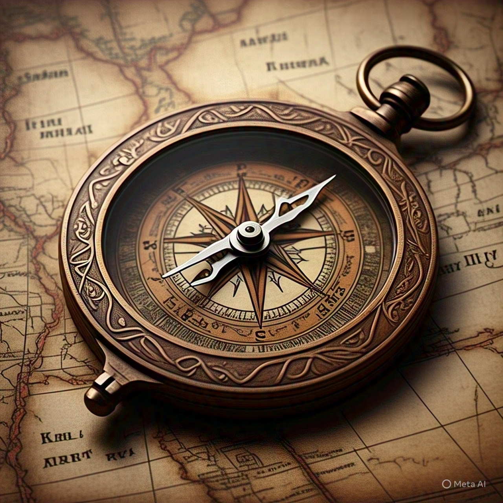

←Voltar
bússola

Descrição
- Quando surgiu:
- Século II a.C. (China) / Popularizada no século XII (Europa)
- Importância:
- Permitiu a navegação marítima de longa distância (era das Grandes Navegações).
- Fundamental para o comércio global e exploração de novos continentes.
- Curiosidade:
- As primeiras bússolas usavam magnetita (ímã natural) em flutuadores de água.